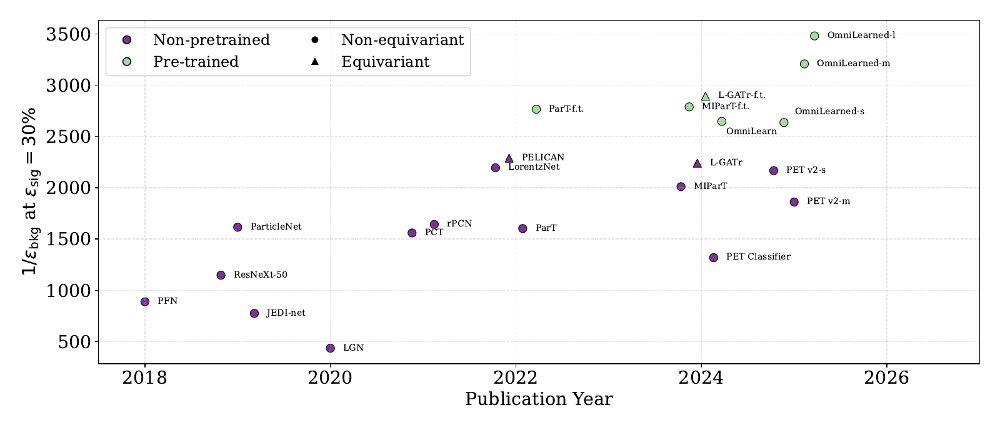

Jet tagging
A stronger starting point.
We compare OmniLearned results for the Community Top Tagging Dataset and find that for a fixed signal efficiency, OmniLearned achieves the highest background rejection of all benchmarks!
Among the benchmarks reported in the OmniLearned paper.
Read the paper
Enlarge ↗